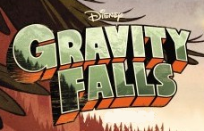

Episodios
| N.º en serie | N° en temp. | Titulo original | Dirigido por | Escrito por | Fecha de emision en LatinoAmerica |
|---|---|---|---|---|---|
| 1 | 1 | «Tourist Trapped» «Turista atrapado» | John Aoshima | Alex Hirsch | 30 de septiembre de 2012 |
| 2 | 2 | «The Legend of the Gobblewonker» | John Aoshima | Michael Rianda Alex Hirsch |
7 de octubre de 2012 |
| 3 | 3 | «Headhunters» «Cazadores de cabezas» |
John Aoshima | Aury Wallington Alex Hirsch |
13 de octubre de 2012 |
| 4 | 4 | «The Hand that Rocks the Mabel» | John Aoshima | Zach Páez Alex Hirsch |
14 de octubre de 2012 |
| 5 | 5 | «The Inconveniencing» | Aaron Springer Joe Pitt |
Michael Rianda Alex Hirsch |
20 de octubre de 2012 |
| 6 | 6 | «Dipper vs. Manliness» | Aaron Springer Joe Pitt |
Tim McKeon | 21 de octubre de 2012 |
| 7 | 7 | «Double Dipper» «Doble Dipper» |
Aaron Springer Joe Pitt |
Mitch Larson (Historia) Michael Rianda, Tim McKeon y Alex Hirsch (Storyboard) |
27 de octubre de 2012 |
| 8 | 8 | «Irrational Treasure» «Tesoro irracional» |
John Aoshima | David Slack (Historia) Tim McKeon y Alex Hirsch (Storyboard) |
28 de octubre de 2012 |
| 9 | 9 | «The Time Traveler's Pig» | Aaron Springer Joe Pitt |
Aury Wallington Alex Hirsch |
6 de enero de 2013 |
| 10 | 10 | «Fight Fighters» | John Aoshima | Zach Páez Alex Hirsch |
13 de enero de 2013 |
| 11 | 11 | «Little Dipper» «Pequeño Dipper» |
Aaron Springer Joe Pitt |
Tim McKeon Zach Páez Alex Hirsch |
20 de enero de 2013 |
| 12 | 12 | «Summerween» | John Aoshima | Michael Rianda Zach Páez Alex Hirsch |
31 de octubre de 2012 |
| 13 | 13 | «Boss Mabel» | John Aoshima | Tom Reahard (historia) Tim McKeon y Alex Hirsch (storyboard) |
23 de marzo de 2013 |
| 14 | 14 | «Bottomless Pit!» «¡Pozo sin fondo!» |
Aaron Springer Joe Pitt |
Alex Hirsch Michael Rianda |
4 de mayo de 2013 |
| 15 | 15 | «The Deep End» | Aaron Springer Joe Pitt |
Nancy Cohen | 11 de mayo de 2013 |
| 16 | 16 | «Carpet Diem» | Joe Pitt | Tim McKeon Alex Hirsch Zach Páez |
18 de mayo de 2013 |
| 17 | 17 | «Boyz Crazy» | John Aoshima | Matt Chapman Alex Hirsch |
25 de mayo de 2013 |
| 18 | 18 | «Land Before Swine» | John Aoshima | Tim McKeon Alex Hirsch |
31 de agosto de 2013 |
| 19 | 19 | «Dreamscapers» | Joe Pitt John Aoshima |
Tim McKeon Alex Hirsch Matt Chapman |
7 de septiembre de 2013 |
| 20 | 20 | «Gideon Rises» «Gideon se eleva» |
Joe Pitt John Aoshima |
Michael Rianda Alex Hirsch Matt Chapman |
8 de septiembre de 2013 |